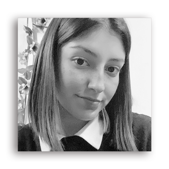

¡Bienvenidos al micrositio!
Me llamo Lucía, tengo 19 años y actualmente estudio Diseño Gráfico y Comunicación Visual en UCES.
Este es el micrositio para el segundo parcial de la materia Diseño Multimedia II, donde podrán ver como fue todo el proceso de recolección de información, armado del wireframe y el diseño final del sitio principal.
